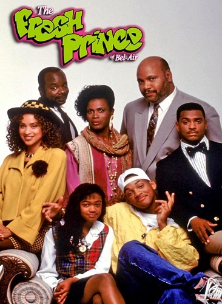

The Fresh Prince of Bel-air (bra: Um Maluco no Pedaço; prt: O Príncipe de Bel-Air) é uma sitcom americana criada por Andy e Susan Borowitz. Foi produzida por Quincy Jones e exibida originalmente pela rede NBC, de setembro de 1990 até maio de 1996. A série fez muito sucesso e foi responsável por revelar o ator Will Smith. No Brasil, a série estreou no SBT no dia 19 de março de 2000. Foi exibida também pelo canal pago Nickelodeon no bloco noturno Nick@Nite. Atualmente a série é exibida no Comedy Central e no TNT. Após ter ficado 8 anos fora da TV Aberta, o SBT readquiriu os direitos da série em 21 de dezembro de 2022, e voltou à programação desde o dia 14 de janeiro de 2023, dentro do programa Sábado Série.
Fresh Prince of Bel-Air teve 148 episódios ao longo de seis temporadas. Uma reunião especial do elenco original estreou na HBO Max em 18 de novembro de 2020. Um reboot mais dramático baseado no fan film "Bel-Air" está em desenvolvimento, com um pedido de duas temporadas para a Peacock.
Sinopse
Através de situações engraçadas, a série mostra os conflitos de valores de uma sociedade marcada por problemas raciais, como a norte-americana, onde o humor impagável de Will leva todos os seus parentes ao limiar da loucura. Após uma briga com valentões drogados na cidade de Filadélfia, a mãe de Will (Vernee Watson-Johnson), temendo que o futuro do filho passasse pelo mundo do crime, resolve enviá-lo para a mansão de sua irmã Vivian (Janet Hubert-Whitten nas três primeiras temporadas; Daphne Maxwell Reid a partir da quarta temporada), uma professora, e de seu cunhado Phillip Banks (James Avery) marido de Vivian e advogado (que depois se tornou juiz), muito bem estabelecido, que mora no elegante e luxuoso bairro de Bel-Air em Los Angeles, para que o filho possa ter uma educação de alto nível. No início, Will não se dá muito bem, pois sendo um garoto humilde, vindo de um bairro pobre, comporta-se de maneira inadequada, além de se mostrar desinteressado pelos estudos e ainda provocar várias trapalhadas aos tios e primos na sofisticada casa, em Bel-Air, mas com o tempo, percebe que precisa se adaptar aos bons costumes da família, o que lhe gera algumas dificuldades, mas faz com que ele e seus parentes se entendam apesar das diferenças.
Produção
Desenvolvimento
Will Smith começou a chamar a atenção dos produtores pelas suas performances em videoclipes e em 1989, quando queria investir na carreira de ator, conheceu Benny Medina, um executivo da Warner, que procurava um rapaz jovem para uma nova série de televisão. A trama seria sobre a vida de um rapaz oriundo de um bairro pobre de Filadélfia que vai morar na badalada e elegante Bel-Air. Após uma série de conversações, com sugestões do próprio Will e aprovação dos executivos da NBC, em 1990 foi iniciada a série The Fresh Prince of Bel-Air, na qual ele interpretava um personagem baseado em si próprio, ou seja, Will Smith. Will Smith conheceu sua esposa Jada Pinkett Smith (a Niobe de Matrix Reloaded), no set de filmagens da série. A atriz estava fazendo um teste para interpretar a namorada do rapper no seriado. Não ganhou o papel, mas conheceu o futuro marido.
O episódio piloto começou a gravar em 1 de maio de 1990. O tema, que é o rap "The Fresh Prince", foi escrito e realizado por Smith sob o seu nome artístico. A música foi composta por QDIII (Quincy Jones III), que é creditado com Smith no final de cada episódio. A mansão usada para para os lados exteriores da "Mansão Banks" está no bairro de Brentwood de Los Angeles, Califórnia, e foi construído em 1937. Interiores foram filmados em um estúdio de som em conjuntos pré-fabricados. Após a 1ª Temporada, os conjuntos de mansões foram totalmente reconstruída. Na segunda temporada, os utensílios de cozinha e sala de estar foram reconstruídas muito maior com um estilo mais contemporâneo e foram conectados diretamente por um arco, permitindo cenas a ser filmado continuamente entre os conjuntos.

Brasão da abertura que aparece na série Um Maluco no Pedaço.